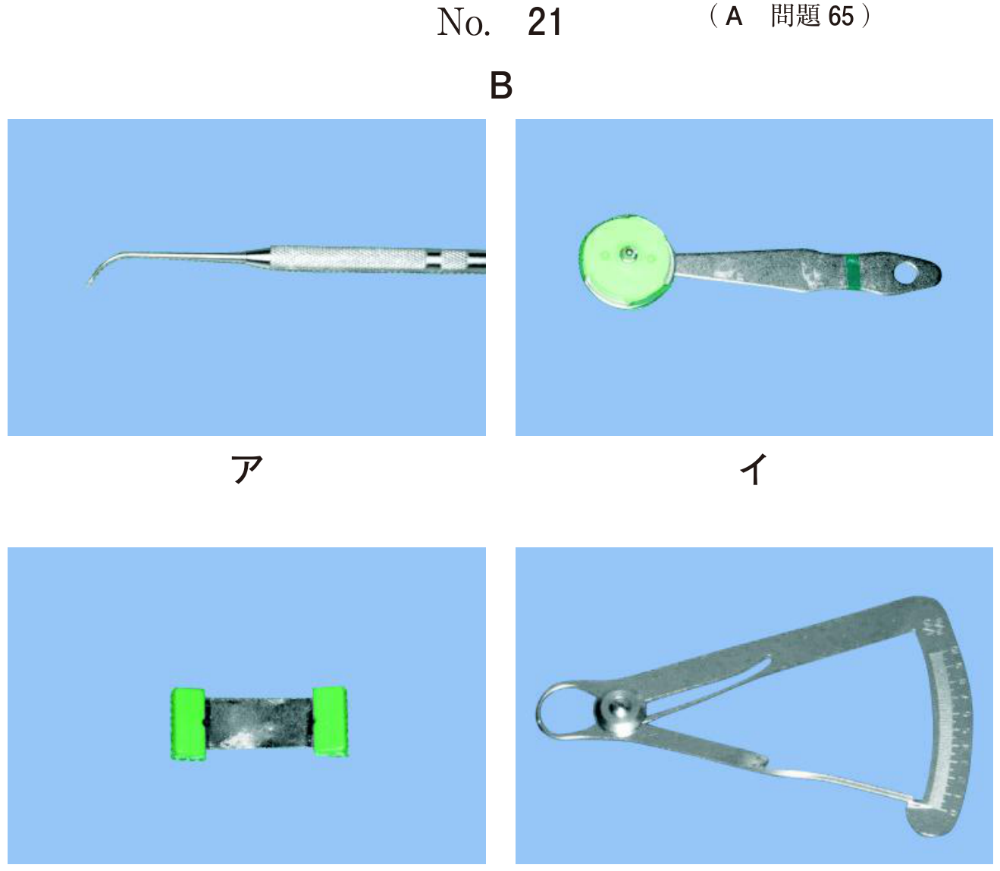

壊死性歯周疾患は、歯肉組織（特に歯間部歯肉）が壊死に陥り潰瘍を形成する疾患群である。
| 分類 | 略称 | 特徴 |
|---|---|---|
| 壊死性潰瘍性歯肉炎 | NUG | 歯肉のみに病変。歯槽骨吸収なし |
| 壊死性潰瘍性歯周炎 | NUP | NUGが進行。歯槽骨吸収あり、アタッチメントロス |
※以前はANUG（急性壊死性潰瘍性歯肉炎）と呼ばれていたが、急性期ばかりでないため現在は「急性」を削除
その他の症状：
| 関連細菌 | Prevotella intermedia、Fusobacterium nucleatum、スピロヘータ ※NUPではPorphyromonas gingivalisも検出 |
|---|---|
| 誘因 | 精神的ストレス、免疫力低下、栄養不良、喫煙 |
| 好発 | HIV感染者、白血病患者 ※HIV関連歯周炎（HIV-related periodontitis）と呼ばれることも |
| NUG（歯肉炎） | NUP（歯周炎） | |
|---|---|---|
| 歯槽骨吸収 | なし | あり |
| アタッチメントロス | なし | 著しい |
| 病変の進行 | 歯肉に限局 | 歯周組織全体に波及 |
症状軽減後（2回目以降）：
23歳の男性。歯肉の痛みと出血を主訴として来院した。2日前から自覚していたがそのままにしていたところ、昨夜から痛みが増悪してきたという。体温は38.0℃で、強い口臭と全身の倦怠感がある。エックス線検査の結果、歯槽骨の吸収は認められなかった。初診時の口腔内写真（別冊No.31）を別に示す。
患部の洗浄とともに行うべき対応はどれか。1つ選べ。

【解説】急性発症の歯肉痛・出血、発熱（38.0℃）、強い口臭、全身倦怠感、歯槽骨吸収なし→壊死性潰瘍性歯肉炎（NUG）の典型例。NUGは細菌感染が原因であり、急性期には患部洗浄とともに抗菌薬の全身投与が適応となる。抗真菌薬（b）はカンジダ症、抗ウイルス薬（d）はヘルペス性歯肉口内炎、ステロイド軟膏（e）はアフタ性口内炎などに用いる。